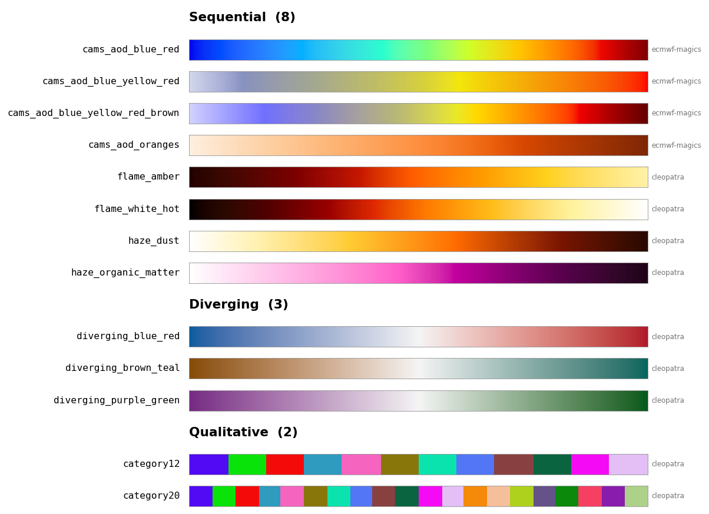

Palettes (registry)#
The cleopatra.styling.palettes module is the single home for every colour ramp cleopatra
knows about. One Palette record — a name, a kind, the colours, and a source
(provenance) — describes each palette; one registry looks them up. Adding a colour
family is therefore data, not a new code path.
A palette's PaletteKind decides how it becomes a
colormap (and, downstream, its natural norm and legend): continuous kinds
(sequential/diverging/cyclic) interpolate their colours perceptually in CIELAB
(via cleopatra.styling.perceptual); a qualitative palette keeps its
exact class swatches as a ListedColormap.
The kind is also what drives Palette.default_norm — pair it with to_colormap to
get both the colours and the matching matplotlib norm in one step: a symmetric
CenteredNorm for diverging, a BoundaryNorm over the class indices for
qualitative, and a linear Normalize otherwise.
The built-in haze / CAMS-AOD / flame families live here and register at import,
so the registry is populated whether you import cleopatra.styling.palettes or
cleopatra.styling.colors. Their name → Colormap dicts (HAZE_COLORMAPS,
CAMS_AOD_COLORMAPS, FLAME_COLORMAPS) are still importable from cleopatra.styling.colors
for backward compatibility.
Curated palettes#
A small set of net-new palettes ships pre-registered — generated with this
package's own tools (make_diverging / make_categorical), not vendored or copied
from any other library:
| Name | Kind | Notes |
|---|---|---|
diverging_blue_red |
diverging | blue ↔ red, lightness-balanced, neutral centre |
diverging_purple_green |
diverging | purple ↔ green |
diverging_brown_teal |
diverging | brown ↔ teal (moisture/precip anomalies) |
category12 |
qualitative | 12 maximally-distinguishable class colours |
category20 |
qualitative | 20 class colours (the first 12 match category12) |
The diverging maps are built on demand from their two endpoints (so the centre lands
exactly on the midpoint); the categorical swatches were generated once with
make_categorical (greedy max-min in CIELAB) and frozen for a stable identity. Fetch
any of them like the built-ins:
from cleopatra.styling.palettes import get_palette, available_palettes
available_palettes("diverging") # ['diverging_blue_red', 'diverging_brown_teal', ...]
cmap = get_palette("category12").to_colormap() # a 12-colour ListedColormap
PaletteKind#
cleopatra.styling.palettes.PaletteKind
#
Bases: StrEnum
What a palette is for -- drives colormap construction and default norm.
Members are plain strings (StrEnum), so PaletteKind.SEQUENTIAL ==
"sequential" and construction is case-insensitive
(PaletteKind("Diverging") is PaletteKind.DIVERGING).
Examples:
>>> from cleopatra.styling.palettes import PaletteKind
>>> PaletteKind.DIVERGING == "diverging"
True
>>> PaletteKind("Qualitative") is PaletteKind.QUALITATIVE
True
Source code in src/cleopatra/styling/palettes.py
Palette#
cleopatra.styling.palettes.Palette
dataclass
#
One colour palette: name, kind, colours, and provenance.
Parameters:
| Name | Type | Description | Default |
|---|---|---|---|
name
|
str
|
Unique registry key / colormap name. |
required |
kind
|
PaletteKind
|
A |
required |
colors
|
tuple[str, ...]
|
The palette colours (hex strings or names) -- interpolation
anchors for continuous kinds, exact class swatches for
|
required |
source
|
str
|
Free-text provenance (e.g. |
'cleopatra'
|
Examples:
>>> from cleopatra.styling.palettes import Palette, PaletteKind
>>> Palette("d", "diverging", ("#762a83", "#f4f4f4", "#1b7837")).kind
<PaletteKind.DIVERGING: 'diverging'>
Source code in src/cleopatra/styling/palettes.py
125 126 127 128 129 130 131 132 133 134 135 136 137 138 139 140 141 142 143 144 145 146 147 148 149 150 151 152 153 154 155 156 157 158 159 160 161 162 163 164 165 166 167 168 169 170 171 172 173 174 175 176 177 178 179 180 181 182 183 184 185 186 187 188 189 190 191 192 193 194 195 196 197 198 199 200 201 202 203 204 205 206 207 208 209 210 211 212 213 214 215 216 217 218 219 220 221 222 223 224 225 226 227 228 229 230 231 232 233 234 235 236 237 238 239 240 241 242 243 244 245 246 247 248 249 250 | |
default_norm(data=None, *, vmin=None, vmax=None, center=None)
#
Return the matplotlib norm that suits this palette's kind.
The companion to to_colormap: pairing a palette's colormap with the norm
its kind implies gives a sensible default rendering without hand-picking a
norm every time.
sequential/cyclic: a linearNormalizeover[vmin, vmax].diverging: aCenteredNormsymmetric aboutcenter(default0.0), so the colormap's neutral midpoint lands on the centre and both ends are equidistant.qualitative: aBoundaryNormover theNdiscrete class indices, so an integer classkmaps to swatchk.
Concrete bounds are taken from vmin/vmax when given, else from data's
finite range; a missing bound left as None autoscales at draw time. data
and the bounds are ignored for qualitative.
Parameters:
| Name | Type | Description | Default |
|---|---|---|---|
data
|
ndarray | None
|
Optional array to auto-range from when |
None
|
vmin
|
float | None
|
Lower bound (continuous kinds). |
None
|
vmax
|
float | None
|
Upper bound (continuous kinds). |
None
|
center
|
float | None
|
Centre for a |
None
|
Returns:
| Type | Description |
|---|---|
Normalize
|
matplotlib.colors.Normalize: The norm for this palette's kind. |
Examples:
>>> from cleopatra.styling.palettes import Palette
>>> from matplotlib.colors import BoundaryNorm, CenteredNorm, Normalize
>>> seq = Palette("s", "sequential", ("#ffffff", "#000000"))
>>> type(seq.default_norm(vmin=0, vmax=10)) is Normalize
True
>>> div = Palette("d", "diverging", ("#0000ff", "#ffffff", "#ff0000"))
>>> isinstance(div.default_norm(vmin=-5, vmax=8), CenteredNorm)
True
>>> Palette("q", "qualitative", ("#f00", "#0f0", "#00f")).default_norm().Ncmap
3
Source code in src/cleopatra/styling/palettes.py
to_colormap(n=256)
#
Build a matplotlib Colormap from this palette.
The colormap is constructed according to kind:
qualitative: the exact swatches as aListedColormap(no interpolation).diverging:make_divergingfrom the first and last colours, so the neutral centre lands exactly on the midpoint and the arms are lightness-balanced. A three-colour diverging palette uses its middle colour as the neutral centre; otherwise a near-white default is used. A palette with more than three colours has its interior colours ignored (only the first/last shape the ramp) and a warning is emitted.sequential/cyclic: the colours interpolated perceptually (CIELAB).
Parameters:
| Name | Type | Description | Default |
|---|---|---|---|
n
|
int
|
Levels for continuous kinds. Defaults to 256. Ignored for
|
256
|
Returns:
| Type | Description |
|---|---|
Colormap
|
matplotlib.colors.Colormap: The colormap for this palette. |
Source code in src/cleopatra/styling/palettes.py
Registry#
Register a palette, look one up, or list what's available (optionally filtered by
kind). PALETTES is the underlying name → Palette mapping.
cleopatra.styling.palettes.register(palette)
#
Add (or replace) a palette in the registry and return it.
Parameters:
| Name | Type | Description | Default |
|---|---|---|---|
palette
|
Palette
|
The |
required |
Returns:
| Name | Type | Description |
|---|---|---|
Palette |
Palette
|
The same palette, for convenient chaining. |
Source code in src/cleopatra/styling/palettes.py
cleopatra.styling.palettes.get_palette(name)
#
Look up a registered palette by name.
Parameters:
| Name | Type | Description | Default |
|---|---|---|---|
name
|
str
|
The palette's registry key. |
required |
Returns:
| Name | Type | Description |
|---|---|---|
Palette |
Palette
|
The registered palette. |
Raises:
| Type | Description |
|---|---|
KeyError
|
If no palette is registered under |
Source code in src/cleopatra/styling/palettes.py
cleopatra.styling.palettes.available_palettes(kind=None)
#
List registered palette names, optionally filtered by kind.
Parameters:
| Name | Type | Description | Default |
|---|---|---|---|
kind
|
PaletteKind | str | None
|
If given, return only palettes of this |
None
|
Returns:
| Type | Description |
|---|---|
list[str]
|
list[str]: Sorted palette names. |
Examples:
>>> from cleopatra.styling.palettes import available_palettes
>>> isinstance(available_palettes("sequential"), list)
True
Source code in src/cleopatra/styling/palettes.py
Preview#
Browse the registry as a grouped swatch grid — a quick way to see every palette (or
just one kind, or an explicit list) at a glance. Returns the matplotlib Figure.

from cleopatra.styling.palettes import preview_palettes
fig = preview_palettes() # all registered palettes, grouped by kind
fig = preview_palettes("diverging") # just the diverging maps
fig.savefig("palettes.png", dpi=130, bbox_inches="tight")
cleopatra.styling.palettes.preview_palettes(kind=None, *, names=None, n=256)
#
Render registered palettes as a grouped swatch grid.
Each palette is drawn as a horizontal strip of its colormap -- continuous
kinds show a smooth ramp, qualitative shows its discrete class swatches --
labelled with its name and source, under a bold heading per PaletteKind.
A quick way to browse the registry (including anything you have registered).
Parameters:
| Name | Type | Description | Default |
|---|---|---|---|
kind
|
PaletteKind | str | None
|
Show only this kind (a |
None
|
names
|
Sequence[str] | None
|
An explicit list of palette names to show instead of filtering by
|
None
|
n
|
int
|
Levels used to build each continuous colormap. Defaults to 256. |
256
|
Returns:
| Type | Description |
|---|---|
Figure
|
matplotlib.figure.Figure: The swatch-grid figure (save or show it |
Figure
|
yourself; cleopatra never changes the active backend). |
Raises:
| Type | Description |
|---|---|
KeyError
|
If a name in |
ValueError
|
If no palettes match the selection. |
Examples:
>>> import matplotlib
>>> matplotlib.use("Agg")
>>> import matplotlib.pyplot as plt
>>> from cleopatra.styling.palettes import preview_palettes
>>> fig = preview_palettes("diverging")
>>> len(fig.axes) > 0
True
>>> plt.close(fig)
Source code in src/cleopatra/styling/palettes.py
323 324 325 326 327 328 329 330 331 332 333 334 335 336 337 338 339 340 341 342 343 344 345 346 347 348 349 350 351 352 353 354 355 356 357 358 359 360 361 362 363 364 365 366 367 368 369 370 371 372 373 374 375 376 377 378 379 380 381 382 383 384 385 386 387 388 389 390 391 392 393 394 395 396 397 398 399 400 401 402 403 | |
Examples#
Register and use a palette#
from cleopatra.styling.palettes import Palette, PaletteKind, register, get_palette, available_palettes
# register a diverging palette (interpolated perceptually when built)
register(Palette("temp_anomaly", PaletteKind.DIVERGING, ("#762a83", "#f4f4f4", "#1b7837")))
p = get_palette("temp_anomaly")
cmap = p.to_colormap() # a LinearSegmentedColormap
norm = p.default_norm(vmin=-4, vmax=6) # a CenteredNorm symmetric about 0
print(available_palettes("diverging")) # ['temp_anomaly', ...]
# ... then: ax.imshow(data, cmap=cmap, norm=norm)